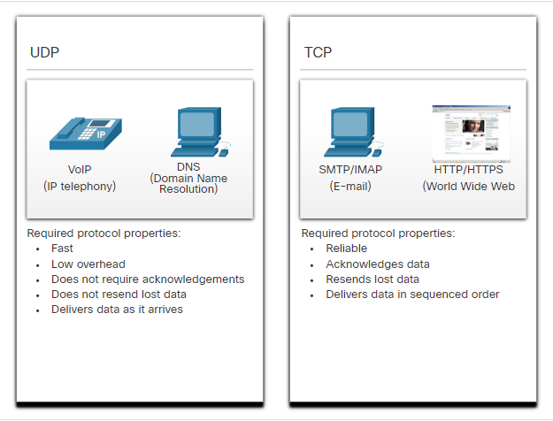

Fémdrót kábel: Elektromos impulzusokkal működik
Üveg- vagy műanyag szálas kábel: Fényvillanásokkal működik
Vezeték nélküli: Elektromágneses hullámokkal frekvencia alapon működik
Publikus felhő: Mindenki elérheti. Fizetős vagy ingyenes.
Privát felhő: Adott szervezet vagy felhasználó érheti el. Létrehozása költséges.
Hibrid felhő: Több részből áll. Különböző hozzáférés.
Közösségi felhő: Adott szervezet érheti el. Szervezetre szabott.
Vírusok, férgek, trójai programok: Rosszindulatú szoftver. Helyi eszközön fut.
Kémprogram(spyware), reklámprogram(adware): Információt gyűjt. Helyi eszközön fut.
Nulladik napi(zero-day) támadás: Biztonsági rés ismerté válásának napján megjelenő támadás.
Személyes fenyegetés: Személy felhasználói eszközt támad meg.
Szolgáltatás-megtagadásos támadás: Lelassít vagy elérhetetlenné tesz szolgálatokat vagy folyamatokat.
Adatelhallgatás és -lopás: Személyes adatot rögzít szervezet hálózatából.
Személyazonosság-lopás: Személy felhasználó adatait lopja el privát adatok hozzáféréséhez.
Vírus- és kémprogramkereső: Megvédik az eszközt a kártékony szoftverektől.
Tűzfal: Blokkolja a jogosulatlan hozzáférést a rendszerhez.
Dedikált tűzfalrendszerek: Fejlettebb, részletesebb tűzfal beállítások.
Hozzáférési listák(ACL): IP-cím alapján szűr.
Behatolás-megelőző rendszerek(IPS): Azonosítjálk a gyorsan terjedő fenyegetést.
Virtuális magánhálózatok(VPN): Biztonságos hozzáférés távolról.
Konzol: Eszköz karbantartására létrehozott fizikai port.
Secure Shell(SSH): Virtuális interfacen keresztül paramcssoros kapcsolat.
Telnet: Nem biztonságos virtuális interface.
Az üzenet forrása (küldő, feladó): Az üzenetek forrásai emberek vagy elektronikus eszközök, amelyeknek üzenetet kell küldeniük más személyeknek vagy eszközöknek.
Az üzenet célja (címzett, fogadó): A célállomás fogadja és értelmezi az üzenetet.
Csatorna: Az a közeg (média) alkotja, amely azt az utat biztosítja, amelyen az üzenetek haladnak a forrástól a célig.
Adatfolyam-vezérlés (Flow Control): Meghatározza, hogy mennyi információt és milyen sebességgel küldhetünk el.
Válaszidő-túllépés (Response Timeout): Ha a kérdésre nem jön válasz elfogadható időn belül, akkor annak megfelelően reagál.
Hozzáférési mód (Access Method): Meghatározza, hogy ki mikor küldhet üzenetet.
Unicast: Egy eszköz számára küld üzenetet.
Multicast: Több eszköz számára küld üzenetet.
Broadcast: Minden eszköz számára küld üzenetet.
Hypertext Transfer Protocol(HTTP): Webszerver és kliens közti kommunikáció. Leírja a kérések és válaszok formáját és tartalmát.
Transmission Control Protocol(TCP): Egyedi párbeszédet hoz létre. Megbízható kézbesítést garantál és adatfolyam-vezérlést is biztosít.
Internet Protocol(IP): Üzenetek továbbítása a küldőtől a címzettig.
Ethernet: Azonos Ethernet LAN-on elhelyezkedő hálózati interface között továbbítja az üzenetet.
